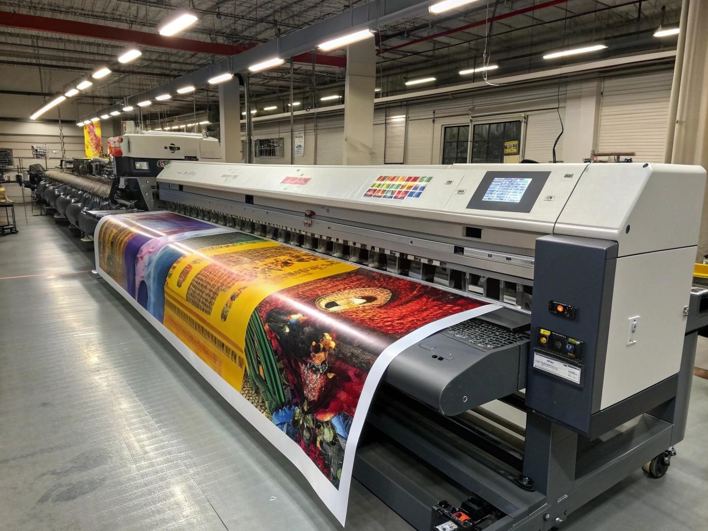

El trabajo real: letreros grandes, impresos y terminados por el equipo.
Departamentos
Ventas
Cómo recibimos el trabajo y lo manejamos en EVO: la ruta de aprendizaje de EVO, recibir una venta, estimados, órdenes, depósitos y facturas.
Abrir departamento → DepartamentoDiseño
Arte, pruebas y el tablero de diseño: preparación de pruebas, qué arte necesitamos del cliente y cómo escribir notas de diseño.
Abrir departamento →
DepartamentoProducción
Cómo se construyen los trabajos: órdenes de trabajo, el tablero de producción y Máquinas y Equipos, una página por máquina.
Abrir departamento → DepartamentoInstalación
Capacitación de instalación para el trabajo en el sitio y en el campo, empezando con la Instalación de Película de Seguridad 3M.
Abrir departamento → DepartamentoGerencia
Procedimientos y referencias para gerentes. Los documentos sensibles de gerencia viven detrás de un inicio de sesión real, no en esta página pública.
Abrir departamento →Más en camino
Se agregan nuevas capacitaciones departamento por departamento, conforme sus videos, capturas y pasos estén listos.